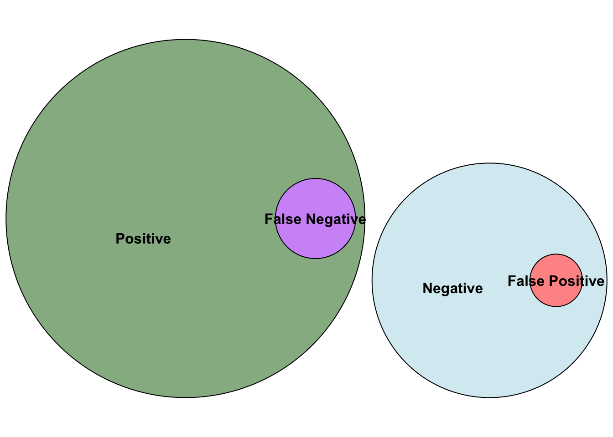
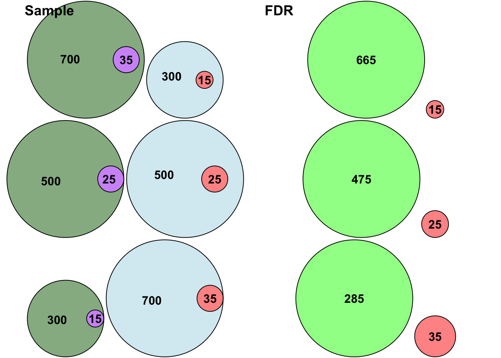
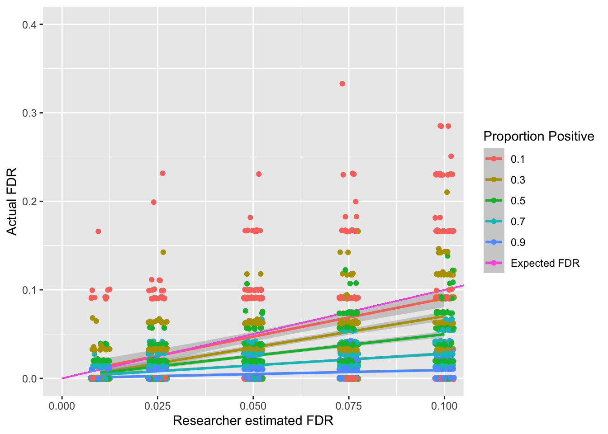
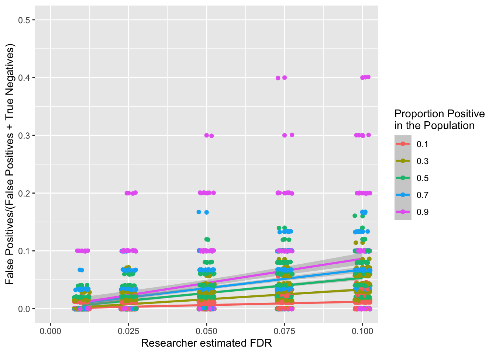
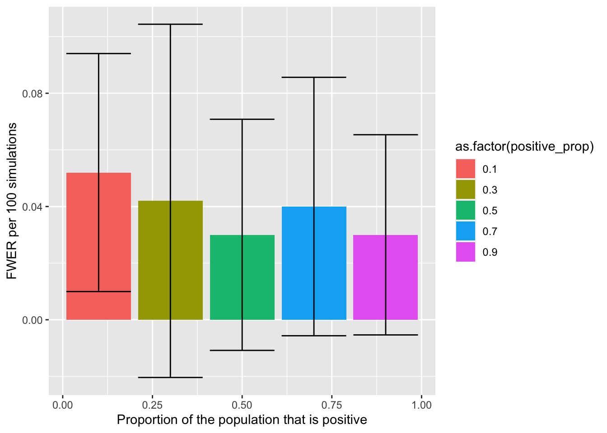

FWER, FDR, Positive and Negative effects(R)
Course Overview
Red means that the page does not exist yet
Orange means that the page is started
Click here for a reminder about what positive and negative effects are in the population
In the context of multiple testing we will refer to effects in the population that do exist as positives, and effects that don’t exist in the population as negatives. This means that a test on a negative effect should ideally you give you a non-significant (negative) result in your sample so that your sample reflects the population (and gives you a true negative). Similarly, if an effect in the population exists, ideally your test on your sample will give you a significant result to reflect a true positive.
False Discovery Rate and Positive vs. Negative effects
The false discovery rate (FDR) is the (expected) proportion of false positives out of true and false positives:
\[ FDR = \frac{\color{red}{FalsePositives}}{\color{red}{FalsePositives} + \color{green}{TruePositives}} \]
Estimating this consistently is tricky because \(\color{red}{FalsePositives}\) should be negative effects (hence written in red), as they reflect negative effects in the population that have incorrectly been identified as positive.
The fact that all false positives are negatives can be visualised as follows:
library(tidyverse)── Attaching packages ─────────────────────────────────────── tidyverse 1.3.2 ──
✔ ggplot2 3.4.2 ✔ purrr 1.0.1
✔ tibble 3.2.1 ✔ dplyr 1.1.2
✔ tidyr 1.3.0 ✔ stringr 1.5.0
✔ readr 2.1.4 ✔ forcats 1.0.0
── Conflicts ────────────────────────────────────────── tidyverse_conflicts() ──
✖ dplyr::filter() masks stats::filter()
✖ dplyr::lag() masks stats::lag()library(eulerr)
set.seed(6)
neg_vd <- list(
"Positive" = 301:1000,
"False Negative" = 301:335,
"Negative" = 1:300,
"False Positive" = 1:15
)
plot(euler(neg_vd, shape = "ellipse"),
fills = list(
fill = c(
"dark green", # Positive
"purple", # False Negative
"light blue", # Negative
"red" # False positive
),
alpha = 0.5
)
)
The above illustration also illustrates that the ratio between positive and negative effects in the population should change your false discovery rate. To illustrate this, let’s create a table of how many false positives and true positives we would expect based on different proportions of positive effects in the population, and what the impact is on the FDR.
fdr_df <- data.frame(
pop_pos = c(700,500,300),
pop_neg = c(300,500,700),
power = c(.95,.95,.95),
alpha = c(.05,.05,.05)
)
fdr_df$true_pos = fdr_df$pop_pos * fdr_df$power
fdr_df$true_neg = fdr_df$pop_neg * (1- fdr_df$alpha)
fdr_df$false_pos = fdr_df$pop_neg * fdr_df$alpha
fdr_df$false_neg = fdr_df$pop_pos * (1-fdr_df$power)
fdr_df$FDR = fdr_df$false_pos/(fdr_df$false_pos + fdr_df$true_pos)
knitr::kable(fdr_df)| pop_pos | pop_neg | power | alpha | true_pos | true_neg | false_pos | false_neg | FDR |
|---|---|---|---|---|---|---|---|---|
| 700 | 300 | 0.95 | 0.05 | 665 | 285 | 15 | 35 | 0.0220588 |
| 500 | 500 | 0.95 | 0.05 | 475 | 475 | 25 | 25 | 0.0500000 |
| 300 | 700 | 0.95 | 0.05 | 285 | 665 | 35 | 15 | 0.1093750 |
The false discovery rate is highest when only 20% of the effects in the population are positive, and lowest when 70% of the effects in the population are positive. Let’s visualise this with some Venn Diagrams:
Expand to see code for the below Venn diagrams
library(eulerr)
set.seed(7)
# Overview
pos_neg_1_plot <- plot(
euler(
pos_neg_1_vd <- list(
"700" = 301:1000,
"35" = 301:335,
"300" = 1:300,
"15" = 1:15
),
shape = "ellipse"
),
fills = list(
fill = c(
"dark green", # Positive
"purple", # False Negative
"light blue", # Negative
"red" # False positive
),
alpha = 0.5
),
)
# FDR comparison
fdr_1_plot <- plot(
euler(
list(
"True Positives" = 336:1000,
"False Positives" = 1:15
),
shape = "ellipse"
),
fills = list(
fill = c(
"green", # Positive
"red" # False Positive
),
alpha = 0.5
),
labels = c(
665,
15
)
)
# 500 positives vs. 500 negatives
# Overview
pos_neg_2_plot <- plot(
euler(
list(
"500 " = 501:1000,
"25 " = 501:525,
"500" = 1:500,
"25" = 1:25
),
shape = "ellipse"
),
fills = list(
fill = c(
"dark green", # Positive
"purple", # False Negative
"light blue", # Negative
"red" # False positive
),
alpha = 0.5
)
)
#FDR
fdr_2_plot <- plot(
euler(
list(
"True Positives" = 526:1000,
"False Positives" = 1:25
),
shape = "ellipse"
),
fills = list(
fill = c(
"green", # Positive
"red" # False Positive
),
alpha = 0.5
),
labels = c(
475,
25
)
)
# 200 positives vs. 800 negatives
pos_neg_3_plot <-plot(
euler(
list(
"300" = 701:1000,
"15" = 701:715,
"700" = 1:700,
"35" = 1:35
),
shape = "ellipse"
),
fills = list(
fill = c(
"dark green", # Positive
"purple", # False Negative
"light blue", # Negative
"red" # False positive
),
alpha = 0.5
)
)
fdr_3_plot <- plot(
euler(
list(
"Positives" = 716:1000,
"False Positives" = 1:35
),
shape = "ellipse"
),
fills = list(
fill = c(
"green", # Positive
"red" # False Positive
),
alpha = 0.5
),
labels = c(
285,
35
)
)library(ggplot2)
library(ggpubr)
ggarrange(
pos_neg_1_plot,
fdr_1_plot,
pos_neg_2_plot,
fdr_2_plot,
pos_neg_3_plot,
fdr_3_plot,
ncol = 2,
nrow = 3,
labels = c("Sample","FDR")
)
In the above figure green represents positives (bright green represents true positives), blue represents negatives, purple reflects false negatives and red reflects false positives. Consistent with the table above, the ratio between false positives and true positives shifts depending on how many positives and negatives there are in the population, thus changing the FDR.
Family-Wise Error Rate and Positive vs. Negative effects
The family-wise error rate (FWER) is the likelihood that at least one of your negative effects has been incorrectly accepted and thus is false-positive. Unlike FDR, there is no comparison between effects that are positive or negative in the population, and so the ratio between positive and negative effects in the population should have no impact on the FWER. The simulations below will help assess if this is true.
Simulations of FDR with different positive rates in the population
We will now run some simulations to generate expected FDR outputs using one-sample t-tests. The parameters will be as follows:
effect size is 1 (Cohen’s d)
\(\alpha\) is .05
Power (\(1-\beta\)) is .95
A Benjamini-Hochberg procedure will be applied to try to attain the FDR required for each simulation:
Expand to see calculation for this simulation
options(scipen = 999)
library(tidyverse)
# calculate how many participants are needed
this_effect_size = 1
sim_pwr = pwr::pwr.t.test(
d = this_effect_size,
sig.level = .05,
power = .95
)
this_pp = round(sim_pwr$n)
q_values = c(.01,.025,.05,.075,.1)
n_tests = 100
# preparing data frame for all the simulations
fdr_sim_df <- data.frame(
q = c(
rep(q_values, each = n_tests*5)
),
positive_prop = rep(c(1,3,5,7,9), n_tests * length(q_values))/10,
pop_pos = NA,
pop_neg = NA,
samp_pos = NA,
samp_neg = NA,
fdr = NA
)
tests_per_sim = 100
for(i in 1:length(fdr_sim_df$q)){
# prepare a data frame to compare positive and negatives within a sample compared to the population
this_subset = data.frame(
population = rep("",tests_per_sim),
sample = "",
true_false = FALSE,
p.value = NA
)
this_pos_prop = fdr_sim_df$positive_prop[i]
for(k in 1:tests_per_sim){
# if the population is positive
if(k/tests_per_sim <= this_pos_prop){
this_subset$population[k] = "positive"
this_t_test <- t.test(
rnorm(
this_pp,
mean = this_effect_size,
sd = 1
),
mu = 0
)
this_subset$p.value[k] <- this_t_test$p.value
}
#if the population is negative
if(k/tests_per_sim > this_pos_prop){
this_subset$population[k] = "negative"
this_subset$p.value[k] = runif(1,min = 0,max = 1)
}
}
# sort the subset into appropriate ranks
this_subset %>%
arrange(p.value) -> sorted_subset
sorted_subset$rank = rank(sorted_subset$p.value)
sorted_subset$alpha = (sorted_subset$rank/tests_per_sim) * fdr_sim_df$q[i]
sorted_subset$sig = sorted_subset$p.value < sorted_subset$alpha
max_sig = max(sorted_subset$rank[sorted_subset$sig])
sorted_subset$sample = "negative"
sorted_subset$hb_sample = "negative"
fdr_sim_df$bh_max_alpha[i] = sorted_subset$alpha[max_sig]
sorted_subset$sample[1:max_sig] = "positive"
fdr_sim_df$true_pos[i] = sum(sorted_subset$population == "positive" & sorted_subset$sample == "positive")
fdr_sim_df$true_neg[i] = sum(sorted_subset$population == "negative" & sorted_subset$sample == "negative")
fdr_sim_df$false_pos[i] = sum(sorted_subset$population == "negative" & sorted_subset$sample == "positive")
fdr_sim_df$false_neg[i] = sum(sorted_subset$population == "positive" & sorted_subset$sample == "negative")
}
fdr_sim_df$fdr = fdr_sim_df$false_pos/(fdr_sim_df$false_pos + fdr_sim_df$true_pos)ggplot(fdr_sim_df, aes(x = q, y = fdr,color=as.factor(positive_prop))) +
geom_smooth(method = "lm", formula = "y ~ x") +
xlab("Researcher estimated FDR") +
ylab("Actual FDR") +
geom_segment(aes(x = 0, y = 0, xend = 1, yend = 1, color="Expected FDR")) +
geom_jitter(width = .0025, height = 0.001) +
coord_cartesian(
xlim = (c(0,.1)),
ylim = (c(0,.4))
) +
labs(color="Proportion Positive")
The above simulations show an interaction between the false discovery rate a researcher sets (known as \(q\)) and the actual false discovery rate depending on the proportion of positive and negative findings in the population. Whilst it might seem problematic that the underlying number of positives and negatives in the population impacts the actual false discovery rate, the good news is that even if only 10% of your tests should be positive (Proportion Positive = .1) based on the population, the Benjamini-Hochberg will on average keep the FDR below the researcher specified FDR.
Optional: expand to see likelihood of a negative becoming a false-positive
Let’s now visualise what the expected proportion of false-positives is compared to all negatives (both false-positives and true negatives):
ggplot(fdr_sim_df, aes(x = q, y = false_pos/(false_pos + true_neg),color=as.factor(positive_prop))) +
geom_point() +
geom_smooth(method = "lm", formula = "y ~ x") +
xlab("Researcher estimated FDR") +
ylab("False Positives/(False Positives + True Negatives)") +
#geom_segment(aes(x = 0, y = 0.05, xend = 1, yend = .05, color="Target FWER \nof .05")) +
geom_jitter(width = .0025, height = 0.001) +
coord_cartesian(
xlim = (c(0,.1)),
ylim = (c(0,.5))
) +
labs(color="Proportion Positive\nin the Population")
The above figure is not very intuitive, as it suggests that a higer proportion of negatives will be incorrectly identified as false-positives when there are more positives (in the population). However, the higher the ratio of positives to negatives in the population, the higher we should expect the highest alpha threshold to be when you use a procedural correction process like Benjamini-Hochberg (or Holm-Bonferroni) procedures. This is because the maximum alpha threshold increases the more tests that pass, and there should be more tests that pass if there are more positives that are being tested. The problem with this, is that this inflated maximum alpha allows more false-positives to sneak in. Let’s illustrate this with the following examples.
Let’s imagine that you do 5 tests, 4 on positives, 1 on a negative.
library(kableExtra)example_1_table <- data.frame(
population = c(
"Positive",
"Positive",
"Positive",
"Negative",
"Positive"
),
rank = c(
1:5
),
p.value = c(
c(.001,.015,.028,.041,.049)
)
)
example_1_table$alpha = (example_1_table$rank/5) * .05
example_1_table %>%
kable(booktabs = T) %>%
kable_styling() %>%
row_spec(
which(example_1_table$p.value < .05),
bold = T,
color = "white",
background = "blue"
)| population | rank | p.value | alpha |
|---|---|---|---|
| Positive | 1 | 0.001 | 0.01 |
| Positive | 2 | 0.015 | 0.02 |
| Positive | 3 | 0.028 | 0.03 |
| Negative | 4 | 0.041 | 0.04 |
| Positive | 5 | 0.049 | 0.05 |
The Benjamini-Hochberg procedure means that we would accept all of the above findings, because the final row’s p-value is below it’s alpha, meaning that we accept all findings above it. This is a shame as the fourth row of them is a false positive (the population is negative even though the sample is now positive). This alpha threshold of .05 won’t occur in the next example where there are 2 Negatives despite the data being very similar:
example_2_table <- data.frame(
population = c(
"Positive",
"Positive",
"Positive",
"Negative",
"Negative"
),
rank = c(
1:5
),
p.value = c(
c(.001,.015,.028,.041,.5)
)
)
example_2_table$alpha = (example_2_table$rank/5) * .05
example_2_table %>%
kable(booktabs = T) %>%
kable_styling() %>%
row_spec(
which(example_2_table$p.value < .03),
bold = T,
color = "white",
background = "blue"
)| population | rank | p.value | alpha |
|---|---|---|---|
| Positive | 1 | 0.001 | 0.01 |
| Positive | 2 | 0.015 | 0.02 |
| Positive | 3 | 0.028 | 0.03 |
| Negative | 4 | 0.041 | 0.04 |
| Negative | 5 | 0.500 | 0.05 |
In the above table we would only accepted the first three tests as there is no test after that in which the p-value is below the alpha value. This difference between the two above tables will not always happen, but as negative tests should give higher p-values (as their results are random) than positive tests (as the sample should hopefully represent the positive effect in the population), the maximum accepted p-value will generally be lower when there are fewer positive effects being tested.
As you can see above, this inflation of false positives is present in the Benjamini-Hochberg procedure, but also can emerge with other procedures like Holm-Bonferroni, for example:
Let’s imagine that you do 5 tests, 4 on positives, 1 on a negative.
example_3_table <- data.frame(
population = c(
"Positive",
"Positive",
"Positive",
"Positive",
"Negative"
),
rank = c(
1:5
),
p.value = c(
c(.001,.01,.015,.024,.049)
)
)
example_3_table$alpha = .05/(5 + 1 - example_3_table$rank)
example_3_table %>%
kable(booktabs = T) %>%
kable_styling() %>%
row_spec(
which(example_3_table$p.value < .05),
bold = T,
color = "white",
background = "blue"
)| population | rank | p.value | alpha |
|---|---|---|---|
| Positive | 1 | 0.001 | 0.0100000 |
| Positive | 2 | 0.010 | 0.0125000 |
| Positive | 3 | 0.015 | 0.0166667 |
| Positive | 4 | 0.024 | 0.0250000 |
| Negative | 5 | 0.049 | 0.0500000 |
All of the above tests narrowly passed the threshold, which is a problem as there is a test on a negative effect that we have accepted. However, we would be less likely to get this false positive if there had been another negative:
example_4_table <- data.frame(
population = c(
"Positive",
"Positive",
"Positive",
"Negative",
"Negative"
),
rank = c(
1:5
),
p.value = c(
c(.001,.01,.015,.049,.5)
)
)
example_4_table$alpha = .05/(5 + 1 - example_4_table$rank)
example_4_table %>%
kable(booktabs = T) %>%
kable_styling() %>%
row_spec(
which(example_4_table$p.value < .01666),
bold = T,
color = "white",
background = "blue"
)| population | rank | p.value | alpha |
|---|---|---|---|
| Positive | 1 | 0.001 | 0.0100000 |
| Positive | 2 | 0.010 | 0.0125000 |
| Positive | 3 | 0.015 | 0.0166667 |
| Negative | 4 | 0.049 | 0.0250000 |
| Negative | 5 | 0.500 | 0.0500000 |
The effect that was previously accepted is no longer significant as the new negative effect replacing the old positive effect has a p-value of .5, and so is now the weakest rather than second weakest effect. As a result, the other negative with a .049 p-value is no longer compared to .05, but to .025, and is no longer significant.
Is the positive association in false-positives with the proportion of positive effects a problem? If you are interested in minimising false-discovery rate then arguably not, as the increase of false-positives will be compensated by the increase in true positives (as you can see in the figures above).
Simulations of FWER with different positive rates in the population
We will now run some simulations to generate expected FWER outputs. The parameters will be the same as for FDR above:
effect size is 1
\(\alpha\) is .05
Power (\(1-\beta\)) is .95
A Holm-Šidák procedure will be applied to try to keep the FWER to .05:
Expand to see calculation for this simulation
options(scipen = 999)
# calculate how many participants are needed
this_effect_size = 1
sim_pwr = pwr::pwr.t.test(
d = this_effect_size,
sig.level = .05,
power = .95
)
this_pp = round(sim_pwr$n)
n_tests = 500
# preparing data frame for all the simulations
fwer_sim_df <- data.frame(
positive_prop = rep(c(1,3,5,7,9), n_tests)/10,
pop_pos = NA,
pop_neg = NA,
samp_pos = NA,
samp_neg = NA,
fwer = NA
)
tests_per_sim = 100
for(i in 1:length(fwer_sim_df$positive_prop)){
# prepare a data frame to compare positive and negatives within a sample compared to the population
this_subset = data.frame(
population = rep("",tests_per_sim),
sample = "",
true_false = FALSE,
p.value = NA
)
this_pos_prop = fwer_sim_df$positive_prop[i]
for(k in 1:tests_per_sim){
# if the population is positive
if(k/tests_per_sim <= this_pos_prop){
this_subset$population[k] = "positive"
this_t_test <- t.test(
rnorm(
this_pp,
mean = this_effect_size,
sd = 1
),
mu = 0
)
this_subset$p.value[k] <- this_t_test$p.value
}
#if the population is negative
if(k/tests_per_sim > this_pos_prop){
this_subset$population[k] = "negative"
this_subset$p.value[k] = runif(1,min = 0,max = 1)
}
}
# sort the subset into appropriate ranks
this_subset %>%
arrange(p.value) -> sorted_subset
sorted_subset$rank = rank(sorted_subset$p.value)
## FWER using HS (Holm-Šidák)
hb_tp = 0
hb_tn = 0
hb_fp = 0
hb_fn = 0
valid_alpha = TRUE
hb_max_alpha = NA
for(j in 1:tests_per_sim){
this_alpha = 1 - (1-.05)^(1/(tests_per_sim + 1 - j))
# positive
if(sorted_subset$p.value[j] < this_alpha & valid_alpha){
# true
if(sorted_subset$population[j] == "positive"){
hb_tp = hb_tp + 1
} else if(sorted_subset$population[j] == "negative"){
hb_fp = hb_fp + 1
}
hb_max_alpha = this_alpha
} else {
valid_alpha = FALSE
if(sorted_subset$population[j] == "positive"){
hb_fn = hb_fn + 1
} else if(sorted_subset$population[j] == "negative"){
hb_tn = hb_tn + 1
}
}
}
fwer_sim_df$hb_tp[i] = hb_tp
fwer_sim_df$hb_fp[i] = hb_fp
fwer_sim_df$hb_tn[i] = hb_tn
fwer_sim_df$hb_fn[i] = hb_fn
fwer_sim_df$hb_max_alpha[i] = hb_max_alpha
}# identifying if any simulation had at least one false positive to identify FWER as 1 or 0
fwer_sim_df$hb_fwer = ifelse(fwer_sim_df$hb_fp > 0, 1 , 0)
# allocating simulations into sets of 100
fwer_sim_df$sim_group = rep(1:25, each = 100)
fwer_summary <- fwer_sim_df %>%
group_by(positive_prop, sim_group) %>%
summarise(
.groups = "keep",
fwer = mean(hb_fwer)
)
fwer_summary_mean_se <- fwer_summary %>%
group_by(positive_prop) %>%
summarise(
fwer_mean = mean(fwer),
fwer_sd = sd(fwer)
)ggplot(
data = fwer_summary_mean_se,
aes(
x=positive_prop,
y=fwer_mean,
fill=as.factor(positive_prop))
) +
geom_col() +
geom_errorbar(aes(ymin = fwer_mean - fwer_sd, ymax = fwer_mean + fwer_sd)) +
xlab("Proportion of the population that is positive") +
ylab("FWER per 100 simulations")
The above figure (error bars reflect SD) visualises how the FWER doesn’t change as a function of the proportion of the population effects are positive (as expected).